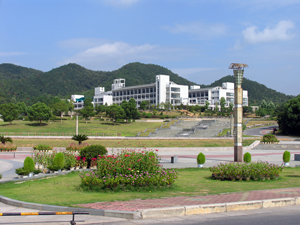

| 学校简介 | 新闻动态 | 院系设置 | 人才培养 | 科学研究 | 国际合作 | 校园风光 | 联系我们 |
|
|||||||
学校简介 |
浙江科技学院是一所以工学为主，集工学、理学、文学、艺术学、经济学、管理学、教育学为一体的多学科全日制省属本科院校，其前身为成立于1980年的浙江大学附属杭州工业专科学校。学校坚定不移地走特色办学之路，逐步形成借鉴德国应用科学大学（FH）办学经验，结合中国国情，培养具有实践能力、创新精神和国际素养的高素质应用型专门人才的办学特色。 学校主校区坐落于素有人间天堂美誉的历史文化名城――杭州，规划土地面积1690亩。学校总建筑面积44万平方米，教学科研仪器设备总值2.06亿元，馆藏纸质图书111.4万册，电子图书237万种，纸质期刊1686种，电子期刊2.4万种。现有13个二级学院，3个教学部（中心）。设有50个本科专业。现有全日制在校生15600余名，留学生1000余名。 办学30多年来, 学校始终把国际交流与合作作为学校发展的重要战略，通过世行贷款项目、中德省州合作项目、中德政府级合作项目、“中德论坛”建设和多种形式的校际交流，形成了鲜明的国际化办学特色。学校是教育部确定的中德合作培养高等应用型人才的试点院校和“中德论坛”基地建设单位，已成为浙江省乃至全国对德教育、科技、文化交流与合作的重要窗口；与包括德国、英国、美国、法国、瑞士、比利时、罗马尼亚、斯洛伐克、澳大利亚、新西兰、日本、韩国等国家在内的50余所高校建立了交流合作关系，各种形式的项目达80余项；是留学基金委优秀本科生出国交流项目的资助院校和中国政府来华留学奖学金生招收院校；开设了全英文授课本科专业5个，全英文授课课程群2个，成为全省开设全英文授课本科专业最多的高校之一；留学生总人数在全省高校位列第5位，学历留学生位列第4位；学校先后在罗马尼亚、德国合作建立海外孔子学院各1所，其中罗马尼亚克鲁日巴比什-波雅依大学孔子学院在全球358所孔子学院中脱颖而出，成为30所全球“先进孔子学院”之一。 学校深入开展“质量工程”，按照“学以致用、全面发展”的育人理念和“优化基础、强化能力、提高素质、发展个性、鼓励创新”的教学改革要求，积极开展高素质应用型专门人才培养的改革与实践。学校是教育部首批实施“卓越工程师教育培养计划”高校。拥有国家级特色专业建设点3个，省级“十二五”优势专业4个，省级重点建设专业9个；国家级工程实践教育中心7个，省级实验教学示范中心5个，省级大学生校外实践教育基地1个，省级人才培养模式创新实验区1个；国家精品视频公开课程1门，省级精品课程19门；“十一五”国家级规划教材5部，国家级精品教材1部，省高校重点教材建设项目24项；获省级以上教学成果奖10项。学生在各类国际、国内学科竞赛中获得佳绩，近5年获得省级及以上奖励2500余项，其中国家级440余项，国际级40余项。学校面向全国23个省（区、市）招收第一、二批次的本科生，生源质量不断提高。毕业生初次就业率均保持在95%以上，位居省属本科院校前列。 学校坚持以学科建设为龙头，以面向经济转型升级需求和战略性新兴产业布局为导向，着力实施“学科振兴计划”，努力提升学科实力和科研水平。2013年1月，学校顺利通过立项建设硕士学位授予单位整体验收。现有8个“十二五”省级重点学科，3个硕士学位授权一级学科，2个省级重点实验室（其中，1个为培育立项建设项目），2个省级首批重点科技创新团队，1个省高校创新团队。近5年，获得省部级及以上奖项20余项，其中获国家技术发明奖二等奖1项（第二完成单位），连续两年获得教育部高校科研优秀成果奖二等奖各1项；到校科研经费1.9亿元；发表论文3800余篇, 其中三大索引和人文社科权威级学术期刊论文800余篇；与企业共建研发机构70余个。 学校大力实施“人才工程”， 努力构建一支“高素质、高水平、有特色”的人才队伍。现有教职工1100余名，专任教师800余名，其中正高职称100余名，硕士及以上学位比例近80%，具有企业实践经历占30%以上，享受国务院特殊津贴4人，全国优秀教师1人，全国教育系统职业道德建设标兵1人，教育部“新世纪优秀人才支持计划”入选者1人，省突出贡献中青年专家2人，省“151人才工程”培养人员66人，省高校中青年学科带头人29人，省优秀教师5人，省高校优秀教师2人，省高校教学名师6人，省级教学团队3个。 学校坚持内涵建设，不断拓展办学资源，强化办学特色，提升办学水平。与德国吕贝克应用科学大学、西海岸应用科学大学签署合作协议，共同举办浙江科技学院中德工程师学院。该项目得到省政府、省教育厅以及安吉县委、县政府大力支持。2013年2月，安吉校区（中德工程师学院）建设项目获浙江省政府批复同意。安吉校区规划土地面积500亩，建筑面积18万平方米，总投资8个亿，在校生规模5000人左右，预计2014年9月建成。 学校秉承“崇德、尚用、求真、创新”的校训，深化改革，锐意进取，以内涵建设为主导，以培养人才和服务社会为己任，朝着建设特色鲜明高水平应用型大学的奋斗目标奋勇前进。 |